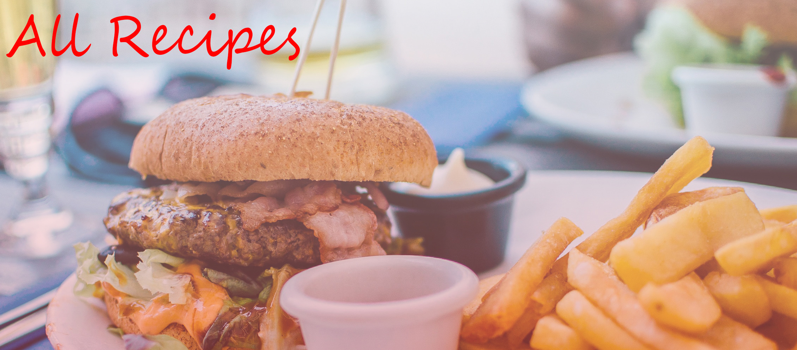
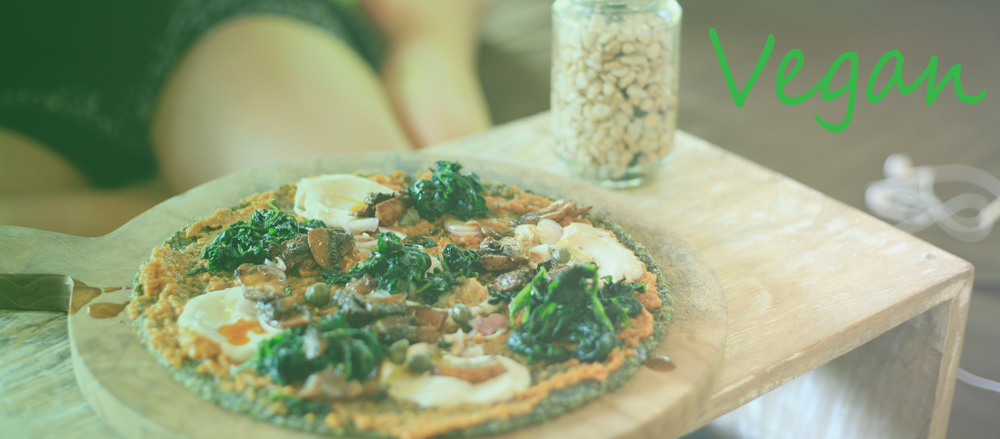
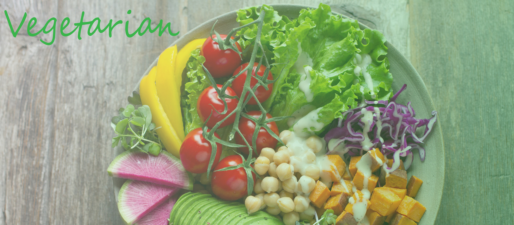
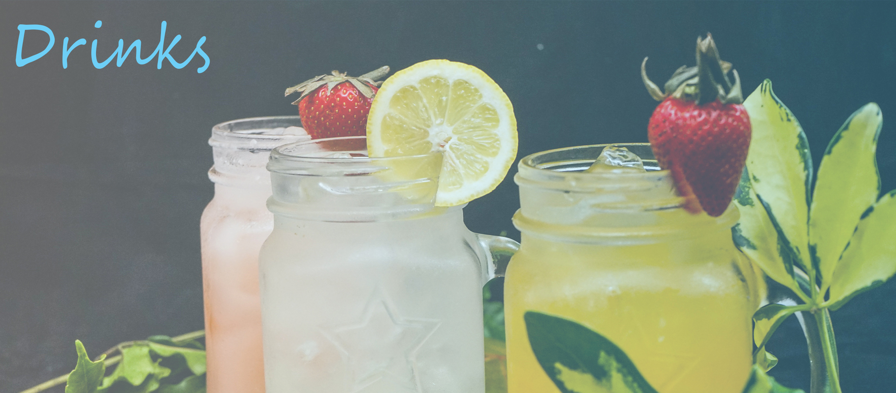
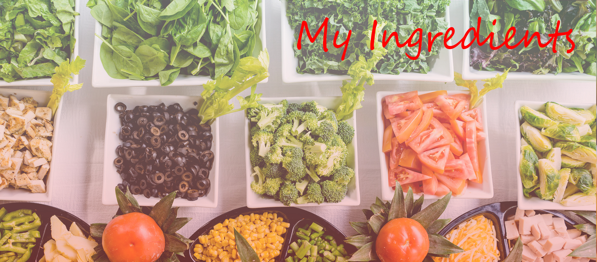

1/ 6

Photo by Dan Gold on Unsplash - Click to go to Page
2 / 6

Photo by Robin Stickel on Unsplash - Click to go to Page
3 / 6

Photo by Anna Pelzer on Unsplash - Click to go to Page
4 / 6
Photo by Pablo Merchán Montes on Unsplash - Click to go to Page
5 / 6

Photo by Tai's Captures on Unsplash - Click to go to Page
6/ 6

Photo by Dan Gold on Unsplash - Click to go to Page